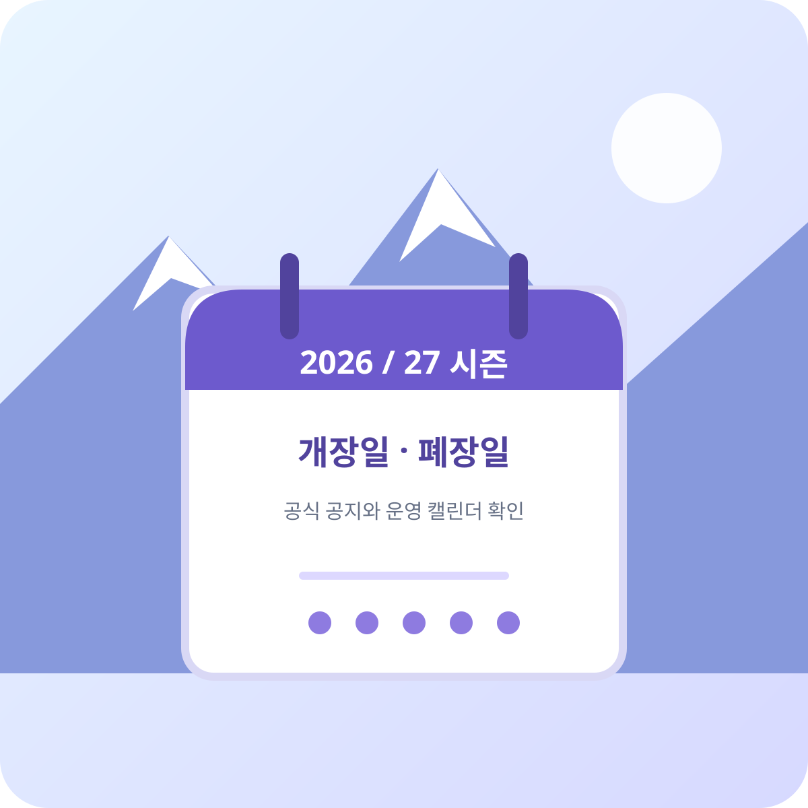

Season Dates · 2026/27
무주리조트 2026/27 개장일·폐장일은 발표됐나요?

2026년 10월 3일 기준, 무주덕유산리조트 공식 시즌권 안내와 운영 캘린더에서 2026/27 스키장 개장일·폐장일을 확인할 수 없습니다. 날짜는 공식 공지가 나온 뒤 확인해야 합니다.
아래 공식 자료에서 2026/27 시즌권 정보와 월별 운영 캘린더는 확인할 수 있지만, 방문 가능한 첫날과 마지막 날은 별도 공지로 확정될 수 있습니다. 이전 시즌 날짜를 올해 일정으로 간주하지 말고 출발 전 최신 공지를 확인하세요.
확인한 공식 자료
- 2026/27 시즌권 안내: 시즌권 상품 및 구매 관련 공지를 확인할 수 있습니다.
- 2027년 2월 스키장 운영 캘린더: 월별 운영일과 시간 변경 사항을 확인하는 공식 일정 페이지입니다.
개장·폐장 날짜가 올라오면 확인할 항목
- 1. 첫 운영일과 마지막 운영일을 확인합니다.
시즌 시작·종료 날짜와 슬로프별 운영일이 같은지 확인하세요. - 2. 당일 운영 여부를 다시 확인합니다.
기상과 설질, 정비 일정에 따라 운영 시간이나 슬로프가 달라질 수 있습니다. - 3. 리프트권과 렌탈 가능 시간을 확인합니다.
운영일과 판매·대여 가능 시간이 별도로 안내될 수 있습니다.
이 페이지의 상태는 공식 자료를 확인한 2026-10-03 기준입니다. 리조트가 날짜를 발표하면 확인된 공지 링크와 함께 내용을 갱신합니다.